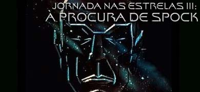
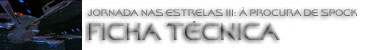

STAR TREK III:
THE SEARCH FOR SPOCK
1984

|

Sinopse
comentada
Comentários
Citações
Efeitos
Especiais
Trilha Sonora
Trivia
Ficha
Técnica
O
DVD
A Morte Tornada
Chance
de Vida

Direção de Leonard Nimoy
Escrito por Harve Bennett e Leonard Nimoy (não-creditado)
Produção de Harve Bennett, Gary Nardino e Ralph Winter
Trilha sonora original de James Horner
Cinematografia de Charles Correll
Edição de Robert F. Shugrue
Elenco por Mary Ann Barton, Elza Bergeron e Stuart Jensen
Design de John E. Chilberg II
Consultor executivo: Gene Roddenberry
Companhia envolvida na produção: Paramount Pictures e Cinema Group Ventures
Casa de efeitos visuais: Industrial Light & Magic (ILM)
Data da estréia nos Estados Unidos: 01/06/1984
Orçamento: US$ 17 milhões (em 1984)
Receita no território americano: US$ 87 milhões (em 1984)
Lucro percentual nos EUA: 412%
Elenco:
William Shatner como almirante James Tiberius Kirk
DeForest Kelley como doutor Leonard H. "Bones" McCoy
James Doohan como capitão Montgomery "Scotty" Scott
George Takei como comandante Hikaru Sulu
Walter Koenig como comandante Pavel Chekov
Nichelle Nichols como comandante Uhura
Christopher Lloyd como comandante Kruge
Mark Lenard como embaixador Sarek
Judith Anderson como T'Lar (crédito como Dame Judith Anderson)
Merritt Butrick como doutor David Marcus
Robin Curtis como tenente Saavik
Phil Morris como tripulante Foster
Robert Hooks como almirante Morrow
John Larroquette como Maltz
James Sikking como capitão Styles
Carl Steven como Spock (idade de 9 anos)
Vadia Potenza como Spock (idade de 13 anos)
Stephen Manley como Spock (idade de 17 anos)
Joe W. Davis como Spock (idade de 25 anos)
Leonard Nimoy como Spock
Grace Lee Whitney como comandante Janice Rand
Frank Welker como a voz nos gritos de Spock
Harve Bennett como a voz do gravador de vôo
Judi M. Durand como a voz de controle da doca espacial